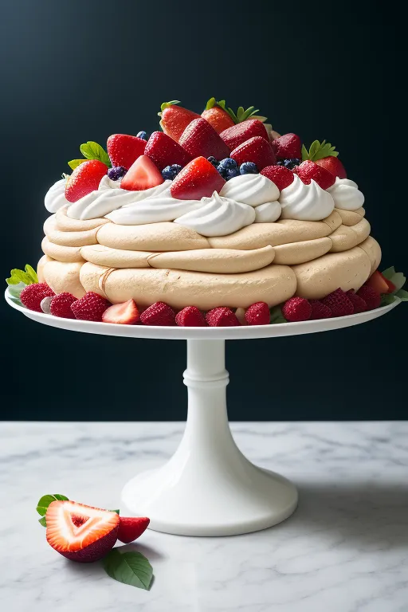

Roast Chicken
- Preheat your oven to 190°C.
- Remove the giblets from the chicken cavity and pat the chicken dry with paper towels. Season inside and out with salt and pepper.
- Mix olive oil, minced garlic, dried thyme, dried rosemary, paprika, onion powder, sage, oregano, and basil to create an herb mixture.
- Rub the herb mixture all over the chicken. Squeeze lemon halves over the chicken and place them inside the cavity.
- Truss the chicken and place it in a roasting pan with a rack.
- Roast the chicken for approximately 20 minutes per pound, basting every 30 minutes.
- Check for doneness using a meat thermometer; the internal temperature should reach 74°C.
- Let the chicken rest for 15 minutes before carving.
- Carve the chicken and serve with your favorite festive side dishes.

Pavlova
- Preheat your oven to 150°C and line a baking sheet with parchment paper.
- Beat egg whites until stiff peaks form. Gradually add granulated sugar, vinegar, vanilla extract, and cornstarch.
- Spoon the meringue onto the prepared baking sheet, forming a circle or oval shape.
- Bake at 120°C for about 1 hour and 30 minutes until crisp on the outside and soft on the inside.
- Cool the pavlova completely inside the oven, then transfer it to a serving plate.
- Whip chilled heavy cream and powdered sugar until stiff peaks form.
- Spread whipped cream over the pavlova base.
- Decorate with an assortment of fresh fruits such as strawberries, kiwi, blueberries, raspberries, and pomegranate seeds.
- Garnish with mint leaves and serve immediately.
Festive Fudge
- Line a square baking pan with parchment paper, leaving an overhang on the sides for easy removal.
- In a large saucepan over medium heat, combine condensed milk, butter, and chocolate chips. Stir continuously until the mixture is smooth and well combined.
- Remove the saucepan from heat and stir in vanilla extract and a pinch of salt.
- Fold in your choice of festive add-ins such as chopped nuts, dried fruits, or holiday sprinkles.
- Pour the fudge mixture into the prepared baking pan, spreading it evenly.
- Refrigerate the fudge for at least 4 hours or until set.
- Once the fudge is set, use the parchment paper overhang to lift it out of the pan.
- Place the fudge on a cutting board and cut it into small, festive squares.
- Serve and enjoy your delicious festive fudge! Store any leftovers in an airtight container in the refrigerator.
Swedish Meatballs and Mashed Potatoes
- In a bowl, combine breadcrumbs and milk. Let it sit for a few minutes until the breadcrumbs absorb the milk.
- In a large mixing bowl, combine ground beef, ground pork, soaked breadcrumbs, chopped onion, minced garlic, egg, salt, black pepper, nutmeg, and allspice. Mix until well combined.
- Shape the mixture into small meatballs, about 1 inch in diameter.
- Heat butter or oil in a large skillet over medium heat. Fry the meatballs until browned on all sides and cooked through. Remove from the skillet and set aside.
- In the same skillet, melt 2 tablespoons of butter. Add flour and cook, stirring constantly, for about 1-2 minutes to make a roux.
- Gradually whisk in the beef or vegetable broth and heavy cream until the sauce thickens. Season with salt and pepper to taste.
- Add the cooked meatballs to the sauce, coating them evenly. Simmer for a few minutes until the meatballs are heated through.
- Serve the Swedish meatballs over mashed potatoes, and drizzle with lingonberry sauce if desired.
- Place the chopped potatoes in a large pot and cover with cold water. Bring to a boil and cook until the potatoes are fork-tender.
- Drain the potatoes and return them to the pot.
- Add butter and milk to the potatoes. Mash until smooth and creamy. Season with salt and pepper to taste.
- Garnish with chopped fresh parsley if desired.

Kutia
- Rinse wheat berries in cold water until clear; soak overnight in lukewarm water, keeping 2 inches above the wheat berries.
- Drain wheat berries, place them in a pot, cover with 4 1/2 cups of milk, and bring to a boil. Reduce heat, cover, and simmer for 3 1/2 – 4 hours until tender, stirring occasionally.
- Rinse and drain poppy seeds, simmer in water, and grind using a food grinder or coffee grinder.
- Preheat the oven to 350˚F. Toast slivered almonds for 5 minutes, then set aside. Reduce temperature to 325˚F.
- When wheat berries are tender, drain off milk. Keep 1/2 cup of cooked milk and discard the rest. Combine 1/2 cup honey with 1/2 cup saved milk.
- Place cooked wheat berries in a mixing bowl. Add ground poppy seeds, raisins, chopped apricots, toasted almonds, honey-milk mixture, and salt. Mix and place in a casserole or pie dish.
- Bake kutia for 20 minutes uncovered at 325˚F.
- Remove from the oven, cover with foil, and let it rest for 15 minutes. Serve warm or cold. Kutia will last in the fridge for up to 2 weeks.

Recipe 6